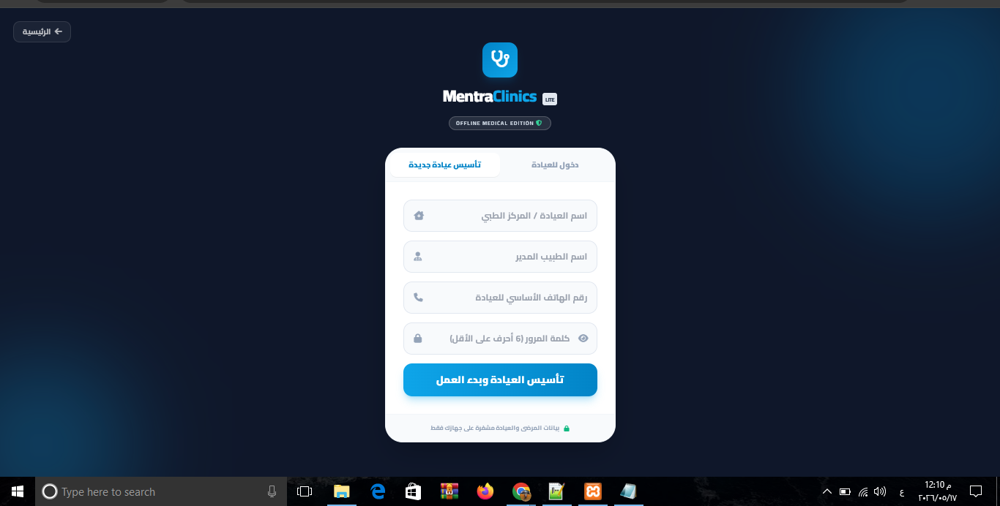
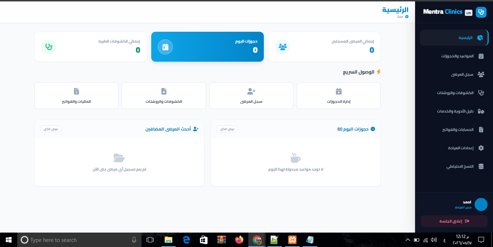
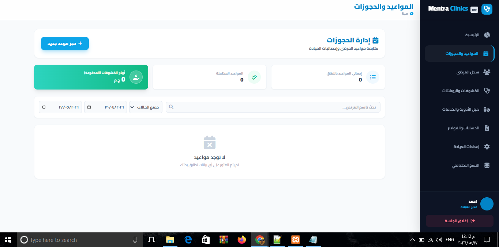
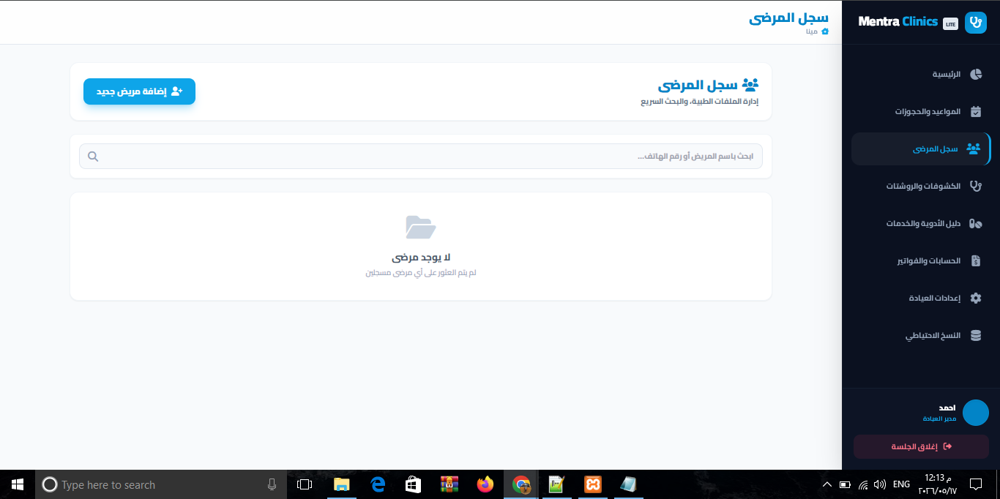
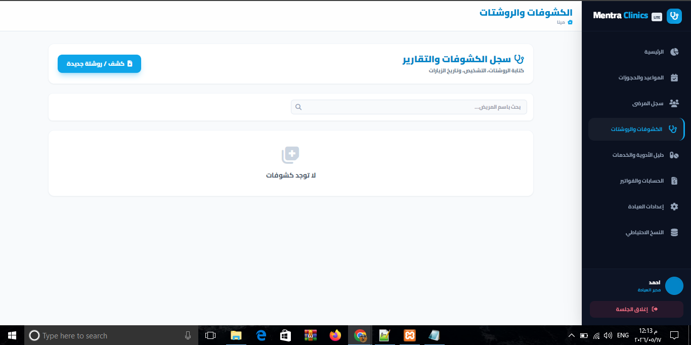
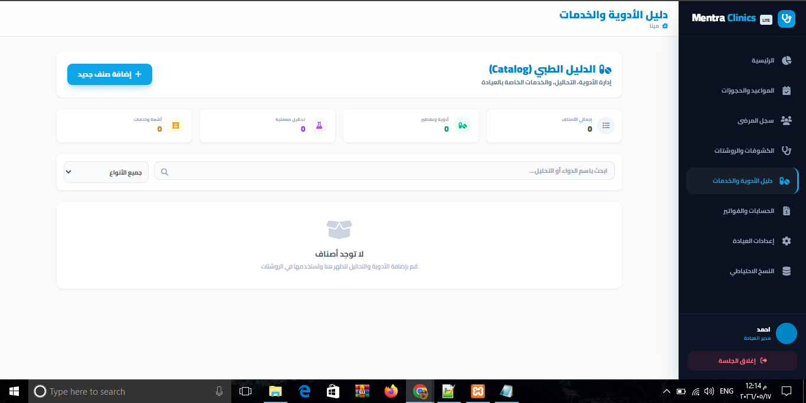
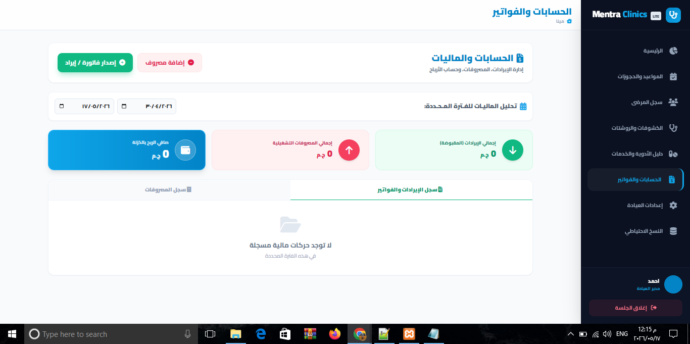
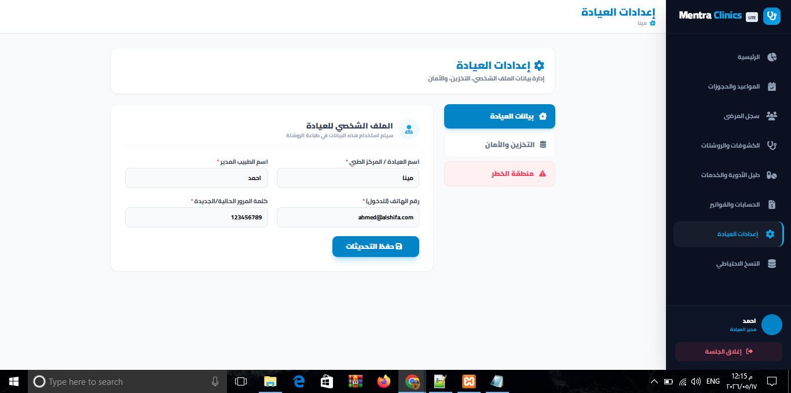
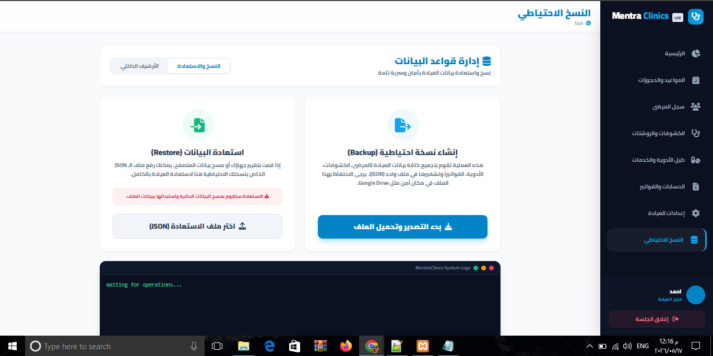

تعرف على كيفية عمل النظام خطوة بخطوة. صُمم هذا النظام ليكون الأسهل، الأسرع، والأكثر أماناً بفضل تقنية حفظ البيانات المحلية (Offline) دون الحاجة للإنترنت.
تبدأ رحلتك من شاشة الدخول والتسجيل subscriptions.html. نظراً لأن النظام محلي 100%، يمكنك تأسيس عيادتك بوضع اسم العيادة واسم الطبيب وتعيين رقم سري.


فور دخولك، تستقبلك شاشة main.js التي تعتبر مركز القيادة. توفر لك نظرة شاملة على أداء العيادة في ثوانٍ معدودة.
عبر شاشة appointments، تنظم جدول عملك بكل سهولة. النظام مزود بتقنيات ذكية لمنع تجميد المتصفح أثناء البحث.


شاشة patients هي الأرشيف السري لمرضاك. إضافة مريض جديد تتم في ثوانٍ، وتتيح لك الوصول للملف الطبي (EMR) لكل مريض.
هذه هي أهم شاشة للطبيب visits. مصممة لتسريع عملية الكشف وكتابة الروشتة وتقليل الوقت المهدر.


شاشة catalog تتيح لك تأسيس قاعدة البيانات الطبية الخاصة بعيادتك وتخصصك.
شاشة accounting تمكنك من السيطرة التامة على أموال العيادة وحساب الأرباح بدقة.


شاشة settings تدير خلفية النظام التقنية وملف الطبيب.
شاشة backup هي طوق النجاة. نظراً لأن النسخة المجانية تحفظ البيانات على جهازك، يجب عليك عمل نسخة احتياطية دورياً لتجنب فقدان البيانات إذا تعطل الويندوز أو المتصفح.

النسخة المحلية (Lite) ممتازة لطبيب يدير عيادته بنفسه. ولكن إذا كان لديك موظف استقبال يحجز المواعيد، وتحتاج لأن تظهر هذه المواعيد على شاشتك في غرفة الكشف لحظياً، فأنت بحاجة إلى النسخة السحابية المتقدمة (Cloud).
يقوم الاستقبال بحجز المريض، ليظهر فوراً أمامك في غرفة الكشف بدون تدخل منك.
صلاحيات مخصصة (مدير، طبيب، موظف استقبال) لحماية البيانات المالية والطبية.
تتيح لك النسخة المدفوعة رفع ملفات PDF وصور لتبقى محفوظة في ملف المريض للأبد.
تواصل معنا المبيعات لمعرفة الأسعار وإعداد نظامك الجديد.